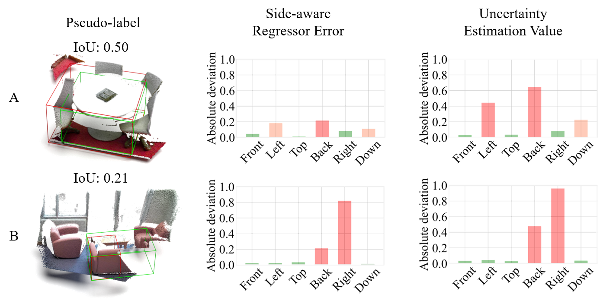
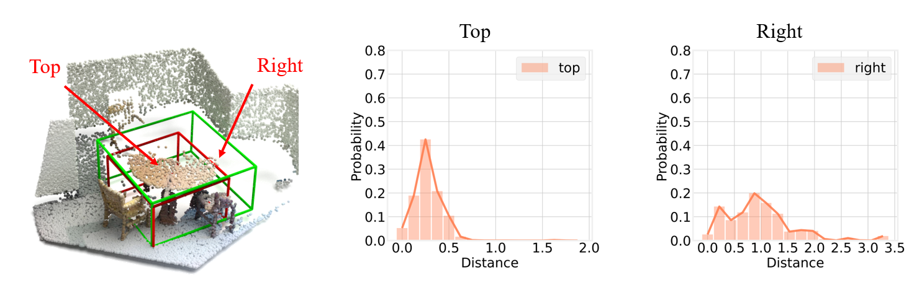
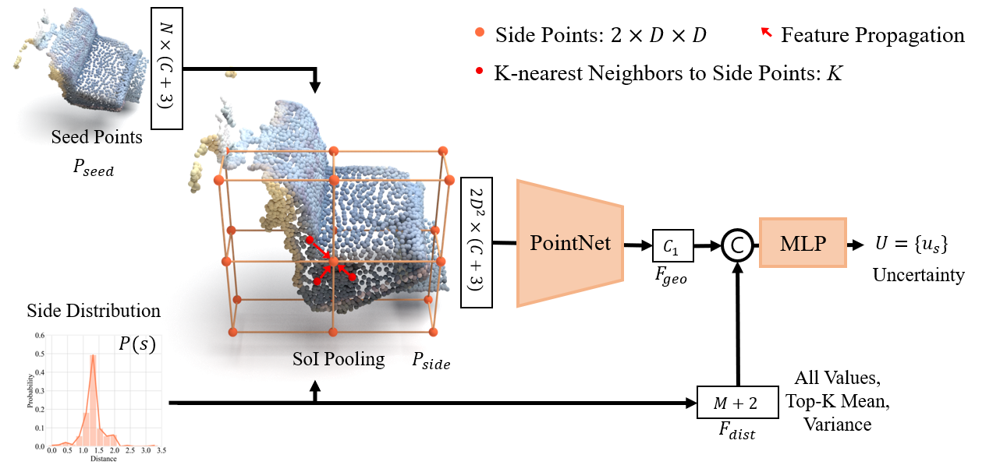
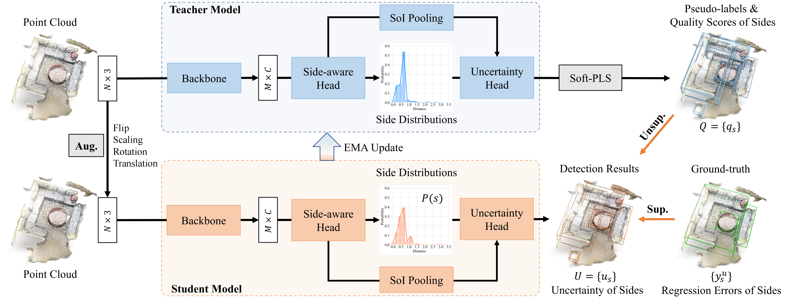
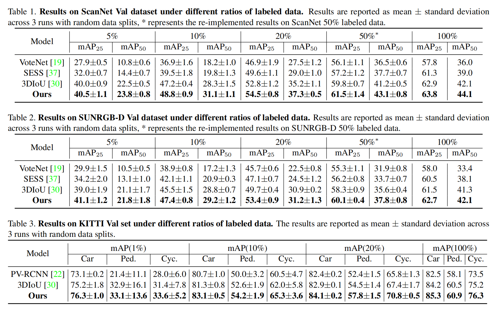
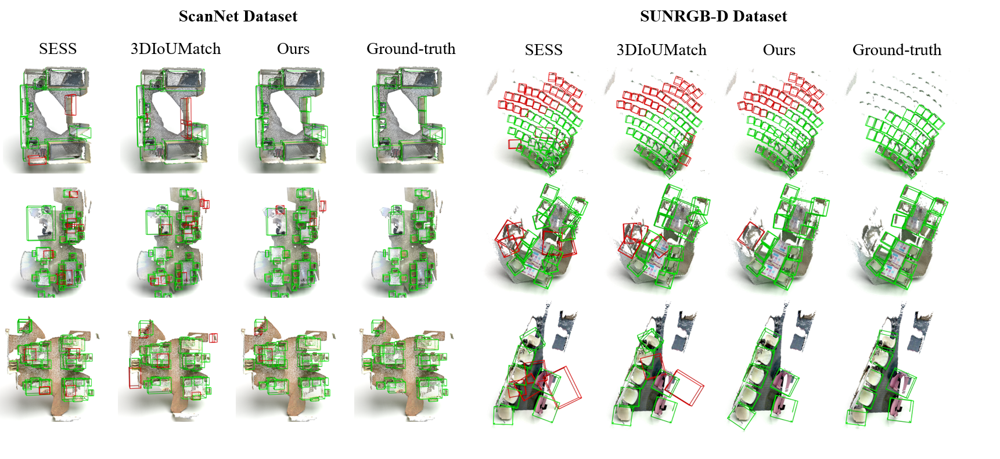
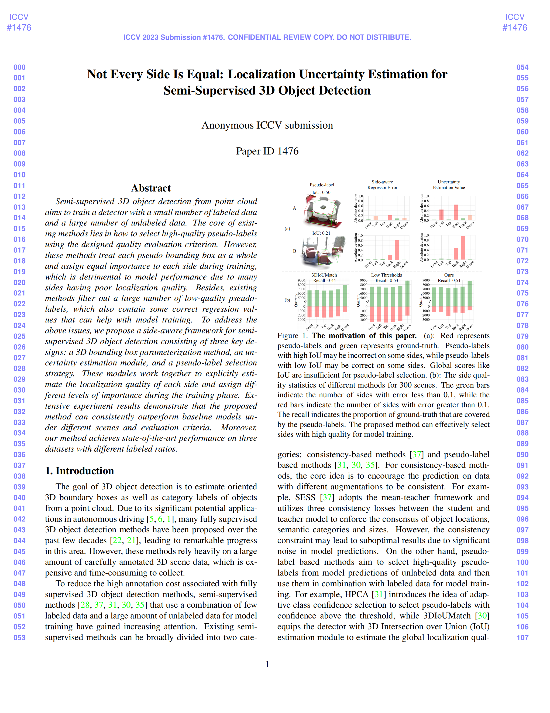

Chuxin Wang1 Wenfei Yang1 Tianzhu Zhang1,2
1University of Science and Technology of China 2Deep Space Exploration Lab
[Paper] [Code] [Website] [BibTeX]
Semi-supervised 3D object detection from point cloud aims to train a detector with a small number of labeled data and a large number of unlabeled data. The core of existing methods lies in how to select high-quality pseudo-labels using the designed quality evaluation criterion. However, these methods treat each pseudo bounding box as a whole and assign equal importance to each side during training, which is detrimental to model performance due to many sides having poor localization quality. Besides, existing methods filter out a large number of low-quality pseudo-labels, which also contain some correct regression values that can help with model training. To address the above issues, we propose a side-aware framework for semi-supervised 3D object detection consisting of three key designs: a 3D bounding box parameterization method, an uncertainty estimation module, and a pseudo-label selection strategy. These modules work together to explicitly estimate the localization quality of each side and assign different levels of importance during the training phase. Extensive experiment results demonstrate that the proposed method can consistently outperform baseline models under different scenes and evaluation criteria. Moreover, our method achieves state-of-the-art performance on three datasets with different labeled ratios.
|

|
Previous pseudo-label based methods use global metric scores (IoU, classification confidence, and voting score, et al.) to select pseudo-labels. Pseudo-labels with high global scores may not cover each side well, while pseudo-labels with low global scores may provide correct predictions for some object sides. An intuitive way is to estimate the localization quality of each side and treat different sides with different importance for model training. |
|
How to estimate the localization quality of each side? (1). Decouple the localization task and predict the position of each side as a probability distribution. (2). Propose a side-aware uncertainty estimation module to evaluate the quality of each side. |


|

Our method is based on the mean-teacher framework. We start by augmenting the point cloud data and feeding it into the student model to obtain both the detection result and the uncertainty of the sides. For labeled data, we directly use the ground-truth to constrain the predicted results. For unlabeled data, we apply the soft-PLS method to filter the predicted results of the teacher model to generate pseudo labels, which are used to supervise the student model. To update the parameters of the teacher model, we employ the Exponential Moving Average (EMA) strategy.
 
(1) In this paper, we propose a side-aware framework with three specific designs: a probabilistic parameterization method, an uncertainty estimation module, and a soft pseudo-label selection.
(2) To the best of our knowledge, our approach is the first to consider the quality of local sides for 3D pseudo-label filtering, enabling full exploitation and utilization of valid information in the model prediction results for supervising student models.
(3) Experiment results indicate that our method outperforms state-of-the-art methods on two indoor datasets and one outdoor dataset.
|

|
Not Every Side Is Equal: Localization Uncertainty Estimation for Semi-Supervised 3D Object
Detection
|
Last update: July 17, 2023